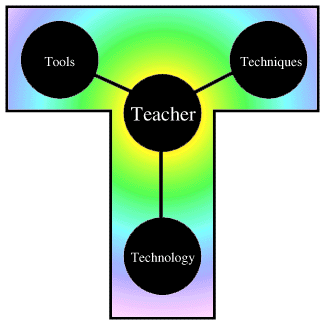

Just as in many racquet sports, controlling the "T" on the court puts
you in reach of all you need to "win." Teachers need to have a working
knowledge of the tools, techniques, and technologies of collaboration
to use them effectively in their instructional milieu and in their
own personal, professional development.
Previous